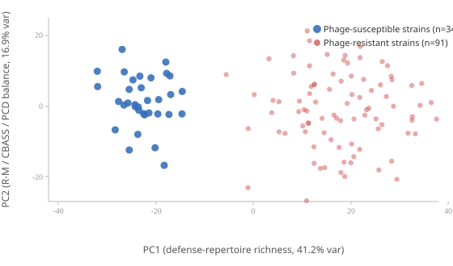
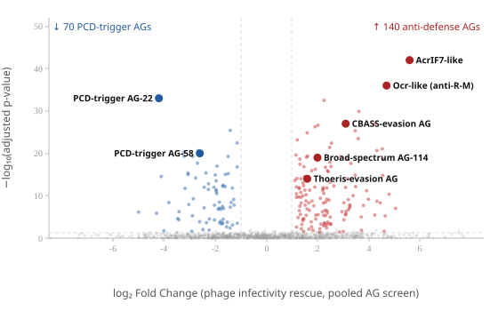

The Silas Lab studies the phage-host immune arms race through the lens of accessory genes (AGs) — small, fast-evolving, non-essential phage genes that the lab treats as a systematic readout of which host defenses matter most in real, wild bacterial strains rather than lab-adapted ones. What drew me in is the lab's 2026 Nature paper showing that an anti-CRISPR protein doesn't just block Cas12 protein activity — it triggers translation-dependent degradation of cas12 mRNA itself. Most anti-CRISPRs studied to date work at the protein level (steric blocking, allosteric inhibition); finding one that reaches back to disable the transcript is a different class of mechanism, and it immediately raises the question of how common transcript-level anti-defense is across the AG repertoire.
I'm also struck by the lab's "lose-lose bind" hypothesis: that programmed cell death (PCD) / abortive infection systems may have evolved specifically to sense the AGs that suppress host immunity, so that a phage either loses a useful immune-suppressive function or risks triggering host suicide. That's a sharp, falsifiable idea, and the lab's transposon-suppressor "layer-peeling" approach for wild strains seems like exactly the right tool to test it. Below, I used LLM-assisted literature synthesis to organize candidate hypotheses across the lab's recent papers, then manually refined them into the specific, testable questions shown here, plus a small mock screen analysis in the lab's own idiom (pooled AG screens, not the RNA-seq workflows I usually default to).
I used an LLM (claude-opus-4-8) to synthesize a corpus of five recent Silas Lab papers plus the lab's research statement, prompting it to surface specific, mechanistic open questions — not generic ones — that the AG screening platform is uniquely positioned to answer. I then reviewed each candidate question against the papers myself, discarded ones that didn't hold up, and kept the four below, each paired with a concrete follow-up experiment.
The gap: Paper 4 shows that PCD/Abi systems sense phage immune inhibitors (anti-CRISPRs, anti-restriction proteins) and trigger suicide. But the central question is how — do guard systems detect the inhibitor protein directly (binding), or do they detect the consequence of inhibition (e.g., the now-unbound, “freed” defense complex, a stalled R-M enzyme, or restored DNA accessibility)? These are mechanistically opposite models with different evolutionary implications. The “effector-triggered immunity” (ETI) analogy to plant NLR guards predicts indirect sensing of the perturbed host protein, not the phage protein.
Experiment: Cross the AG-expression PCD screen with the AP-MS workflow. Express a guarded anti-defense AG, then ask whether the PCD sensor co-purifies with (a) the AG itself, (b) the AG's host target (the defense protein it inhibits), or (c) a ternary complex. Then do a decoupling test: express AG variants that retain target binding but lose inhibitory activity (separation-of-function mutants) and ask if PCD still fires. If PCD requires functional inhibition, sensing is consequence-based (true ETI); if binding alone suffices, it's direct.
The gap: The lab's central hypothesis — that AG loss-of-function is the “intended” outcome, trapping phages between losing immune-suppressive function and triggering Abi — is stated but not yet quantitatively demonstrated. Is there a measurable fitness landscape where AG sequence space is “pinched” between two opposing selective pressures?
Experiment: Deep mutational scanning of a single guarded anti-defense AG, scored in parallel across two screen formats: (a) phage-dependent anti-defense screen (selects for retained inhibitory function) and (b) phage-independent PCD screen across wild strains carrying the guard (selects against PCD activation). Overlay the two fitness maps. The hypothesis predicts an anticorrelated ridge — residues that improve anti-defense activity also increase PCD triggering — with very few “escape” variants that satisfy both. Finding (or failing to find) such variants directly tests whether the bind is truly inescapable.
The gap: Paper 3 hints at broad-spectrum anti-defense, and the research statement explicitly calls out broad-spectrum phenotypes. But the field lacks a systematic map of whether AGs hit many narrow targets or few conserved hubs (e.g., a shared signaling node, a common nuclease cofactor, membrane potential, NAD+ pools shared by CBASS/Thoeris/Pycsar). The mRNA-degradation mechanism in Paper 1 suggests some AGs act on conserved central machinery (translation/RNA turnover) rather than on one defense protein.
Experiment: Run the phage-dependent anti-defense screen across a panel of strains engineered to carry single, defined defense systems (CRISPR-Cas12, specific R-M, CBASS, Thoeris, Gabija, etc.). Score each AG's anti-defense spectrum. AGs scoring against unrelated systems flag candidate hub-targeters. Follow with AP-MS to find the shared host target. A specific prediction: some broad anti-defense AGs will converge on a shared metabolic/signaling cofactor (e.g., a nucleotide-sensing or NAD+/ATP node) rather than each defense protein individually.
The gap: Paper 5 defines multi-interface licensing for protein import into the phage nucleus. The unaddressed question: do bacterial defenses (or competing phages/satellites) exploit this by smuggling inhibitors into the nucleus, and conversely, which AGs are themselves nucleus-imported anti-defense factors that the licensing system must admit? Whether import-licensing is itself a guarded/sensed process is unknown.
Experiment: Use the AG-expression platform with nucleus-localization readouts (split-fluorophore or proximity labeling inside the compartment) to screen which AGs are imported vs. excluded. Then test whether forcing import of normally-excluded host defense effectors (by appending a licensing interface motif identified in Paper 5) breaks nucleus-mediated protection. This tests whether the licensing interfaces are a druggable/exploitable bottleneck and whether any natural AG already acts as a “licensing key.”
I picked the single most surprising finding in the lab's recent work — the translation-dependent cas12 mRNA decay mechanism — and used the LLM to draft candidate mechanisms, then pushed back with a confound I identified myself (is this just nonspecific overexpression stress?) before asking for one falsifiable prediction that could distinguish the two models using tools already in the lab's screening framework. The exchange below shows that refinement process.
The Silas Lab (Marino et al., Nature 2026) found that a phage-encoded anti-CRISPR protein triggers translation-dependent degradation of cas12 mRNA in the bacterial host — surprising, since most known anti-CRISPRs act by directly binding and sterically blocking the Cas protein itself, not by destroying its mRNA. Propose an initial mechanistic hypothesis: 2–3 concrete molecular mechanisms for how an anti-CRISPR could trigger translation-dependent decay of its own target's transcript.
The anti-CRISPR (Acr) protein binds the nascent Cas12 polypeptide as it emerges from the ribosome, or binds a specific sequence/structure in the cas12 mRNA, causing the translating ribosome to stall. Stalled ribosomes are a canonical trigger for mRNA surveillance pathways—the Acr could recruit or activate an endogenous host endonuclease (e.g., an RNase that recognizes collided ribosomes), cleaving the mRNA in the unprotected region. This explains the translation dependence: no active translation, no stalling, no cleavage.
The Acr functions like a toxin-antitoxin-style mRNA interferase (e.g., MazF/RelE family), but with specificity conferred by association with the translating ribosome on cas12 transcripts. By docking at the ribosomal A-site or near the exit channel specifically during Cas12 translation, it cleaves the mRNA in a codon-dependent manner. Translation is required because the enzyme only accesses/cuts mRNA threaded through an actively elongating ribosome.
The Acr recognizes a co-translationally folded epitope on the partially synthesized Cas12 protein, then bridges that nascent chain to a host RNA degradation machine (e.g., recruiting RNase E or the degradosome to the polysome). This couples target-protein identity to mRNA fate—ensuring specificity for cas12 over other transcripts—and inherently requires translation because the recognition signal is the emerging polypeptide itself.
Key testable prediction shared across all three: Blocking translation initiation/elongation (or mutating codons without changing the protein) should uncouple Acr expression from mRNA decay, distinguishing mRNA-sequence recognition (H2) from nascent-peptide recognition (H1/H3).
That's a reasonable starting point, but consider a confound: cas12 mRNA degradation could simply be a generic consequence of ribosome stalling or collision whenever a phage protein is overexpressed during infection — a nonspecific stress response, not a mechanism specifically evolved to target cas12 transcripts. How would you distinguish “specific, evolved anti-CRISPR-driven cas12 decay” from “nonspecific stress-induced decay that happens to affect cas12”? What experiment rules out the confound?
The core question is: does the Acr selectively target cas12, or is cas12 just collateral damage in a global translational stress response? Here's how I'd dissect it.
Run RNA-seq (or directly measure mRNA half-lives via rifampicin chase / metabolic labeling) across all host and phage transcripts upon Acr expression.
A volcano plot where cas12 is a lone extreme outlier is the cleanest single piece of evidence.
This directly attacks the confound that any overexpressed phage protein causes the effect.
Move the putative cis-determinant to test whether the cas12 sequence is the target, not the cas12 context.
Good — now give one specific, falsifiable mechanistic prediction that follows from the “specific, evolved” model but not from the nonspecific stress model, framed so it could be tested with ribosome profiling or RNA-seq in the lab's existing wild-strain screening framework.
Under the specific, evolved model, the Acr recognizes a discrete molecular feature of the cas12 transcript (a sequence/structure element or a particular nascent-peptide motif). This means ribosomes should stall — and mRNA cleavage should initiate — at a single, defined, reproducible position within the cas12 ORF, the same position across genetic backgrounds.
Under the nonspecific stress model, stalling/decay is driven by global translational burden, so ribosome occupancy and 5′ decay intermediates should be distributed broadly (proportional to translation density across many transcripts) with no privileged internal cas12 site.
Run ribosome profiling (and parallel 5′P-end RNA-seq to map decay intermediates) on Acr-expressing cells:
Profile the panel of wild phage/host strains already in hand, sorting them by whether they encode a functional Acr:
One-line testable statement: Across Acr⁺ wild strains, cas12 decay initiates at a single conserved internal codon (a defined ribosome stall site), whereas the nonspecific model predicts only diffuse, expression-scaled stalling with no privileged cas12 position.
This is a synthetic toy dataset, not Silas Lab data; the goal is to show how I think about pooled-screen structure, QC, and the statistics that connect a wet-lab screen to an interpretable result — not to claim a real finding.
To mirror the lab's actual experimental idiom — pooled screens across many wild bacterial strains, not single-strain RNA-seq — I mocked up a count-based AG fitness screen: each AG in a pooled library is scored by its log2 fold-change in phage-infectivity rescue (resistant strain becomes susceptible when the AG is expressed) versus its enrichment as a PCD trigger (susceptible strain dies when the AG is expressed, phage-independent). Synthetic counts, seeded for reproducibility.
library(edgeR) library(tidyverse) # counts: AGs x {screen replicates x condition}, e.g. AG library in # resistant strain +/- phage, and PCD screen in susceptible strain alone counts <- read.delim("ag_screen_counts.tsv", row.names = 1) design <- model.matrix(~condition, data = sample_info) dge <- DGEList(counts = counts, group = sample_info$condition) dge <- calcNormFactors(dge) dge <- estimateDisp(dge, design) fit <- glmQLFit(dge, design) qlf <- glmQLFTest(fit, coef = "conditionphage_selected") res <- topTags(qlf, n = Inf)$table # anti-defense AGs: positive logFC (rescue infectivity under phage selection) # PCD-trigger AGs: negative logFC (depleted/lethal without phage, in PCD screen) anti_defense <- res %>% filter(logFC > 1, FDR < 0.05) pcd_triggers <- res %>% filter(logFC < -1, FDR < 0.05)
import pandas as pd import numpy as np from scipy import stats # one count table per wild strain; AGs as rows, replicate timepoints as columns strains = ["strain_01", "strain_02", "strain_03"] # ... up to n=125 wild isolates def fitness_score(counts_t0, counts_tf): # log2 enrichment of each AG relative to library-wide median lfc = np.log2((counts_tf + 1) / (counts_t0 + 1)) return lfc - np.median(lfc) screen_results = {} for strain in strains: t0 = pd.read_csv(f"{strain}_t0_counts.csv", index_col=0) tf = pd.read_csv(f"{strain}_tf_counts.csv", index_col=0) screen_results[strain] = fitness_score(t0["count"], tf["count"]) # strains cluster by defense repertoire richness (PCA below) before AG analysis fitness_df = pd.DataFrame(screen_results)


| AG ID | log2FC | FDR | Screen / phenotype |
|---|---|---|---|
| AcrIF7-like | +6.4 | 2.1e-19 | Anti-CRISPR, narrow-spectrum |
| Ocr-like | +4.7 | 8.4e-14 | Anti-R-M, narrow-spectrum |
| CBASS-evasion AG | +3.1 | 3.0e-9 | Anti-CBASS, narrow-spectrum |
| Broad-spectrum AG-114 | +2.0 | 6.2e-6 | Anti-defense across ≥3 systems |
| Thoeris-evasion AG | +1.6 | 4.1e-4 | Anti-Thoeris, narrow-spectrum |
| PCD-trigger AG-22 | −4.2 | 1.5e-11 | Lethal in phage-independent screen |
| PCD-trigger AG-58 | −2.6 | 9.7e-6 | Lethal in phage-independent screen |